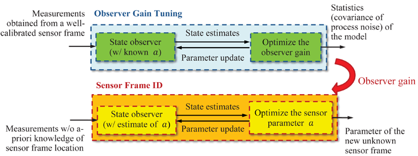

<!DOCTYPE html PUBLIC "-//W3C//DTD XHTML 1.0 Transitional//EN" "http://www.w3.org/TR/xhtml1/DTD/xhtml1-transitional.dtd">
<html xmlns="http://www.w3.org/1999/xhtml" lang="en" xml:lang="en">
<head>
	<meta http-equiv="content-type" content="text/html; charset=utf-8" />
	<meta name="description" content="MSC Lab Homepage" />
	<meta name="keywords" content="mechanical,systems,control" />
	<meta name="author" content="Raechel Tan" />
    <link rel="icon" href="../../../mscicon.ico" />
    <link href='http://fonts.googleapis.com/css?family=PT+Sans|Brawler' rel='stylesheet' type='text/css' />
	<link rel="stylesheet" type="text/css" href="../../../style.css" media="all" />
	<title>MSC Lab - Automatic Sensor Frame Identication</title>
</head>

<body>
<div id="container980"><!-- Use"containerfull" for 100% width. For fixed width, use "container980", "container760" or "container600" (the number is the layout width in pixels). -->
	<div id="header">
    	
	</div>
	<div id="menu"> 
		<ul>     
			<li><a href="../../../index.html">Home</a></li>
			<li><a href="../../../people.html">People</a>
            	<ul>
                	<li><a href="../../../people/tomizuka.html">Prof. Masayoshi Tomizuka</a></li>
                    <li><a href="../../../people/students.html">Students</a></li>
                    <li><a href="../../../people/visitors.html">Visitors</a></li>
                    <li><a href="../../../people/alumni.html">Alumni</a></li>
                    <li><a href="../../../people/prev_visitors.html">Previous Visitors</a></li>
                </ul>
            </li>
			<li><a class="current" href="../../../research.html">Research</a>
            	<ul>
                	<li><a href="../../robotics.html">Robotics</a></li>
                    <li><a href="../../human.html">Human Mechatronics</a></li>
                    <li><a href="../../disk.html">Hard Disk Drive Control</a></li>
                    <li><a href="../../precision.html">Precision Motion Control</a></li>
                    <li><a href="../../automotive.html">Automotive Control Systems</a></li>
                    <li><a href="../../../../research.html">more...</a></li>
                </ul>
            </li>
            <li><a href="../../../publications.html">Publications</a>
            	<ul>
                	<li><a href="../../../publications/papers_robotics.html">Robotics</a></li>
                    <li><a href="../../../publications/papers_human.html">Human Mechatronics</a></li>
                    <li><a href="../../../publications/papers_disk.html">Hard Disk Drive Control</a></li>
                    <li><a href="../../../publications/papers_precision.html">Precision Motion Control</a></li>
                    <li><a href="../../../publications/papers_automotive.html">Automotive Control Systems</a></li>
                    <li><a href="../../../publications.html">more...</a></li>
                </ul>
            </li>
            <li><a href="../../../resources.html">Resources</a>
            	<ul>
                	<li><a href="../../../resources/news.html">News and Announcements</a></li>
                    <li><a href="../../../resources/network.html">Network and Printing</a></li>
                    <li><a href="../../../resources/courses.html">Prof. Tomizuka's Courses</a></li>
                    <li><a href="../../../resources/conferences.html">Upcoming Conferences</a></li>
                </ul>
            </li>
            <li><a href="../../../misc.html">Miscellaneous</a>
            	<ul>
                	<li><a href="../../../misc/logo.html">MSC Logo</a></li>
                    <li><a href="../../../misc.html">more...</a></li>
                </ul>
            </li>
            <li><a href="../../../contact.html">Contact Us</a></li>
		</ul>
	</div>

	<div id="main">
    	<div id="navtree">
			<p><a href="../../../research.html">Research</a> &gt; <a href="../../robotics.html">Robotics</a> &gt; <a href="../robot_manip.html">Intelligent Control of Robot Manipulators</a> &gt; <a href="robot_manip_ASFI.html">Automatic Sensor Frame Identication</a></p>
		</div>
    
	  <div id="content">
       	<div id="sidebar">
			<div class="sidebarbox">
               <h3>Contents:</h3>
				<ul class="sidemenu">
					<li><a href="#motivation">Motivation and Approach</a></li>
                    <li><a href="#results">Main Results</a></li>
                    <li><a href="#pub">Recent Key Publications</a></li>
				</ul>
			</div>
			</div>

          <h2>Automatic Sensor Frame Identication</h2>
	    <h3 id="motivation">Motivation and Approach</h3>
		  <p>In industrial applications, sensor mounting locations may vary due to task variations, which leads to frequent needs of sensor frame calibration. To simplify the calibration process, and to ensure the accuracy of the state estimation in robot manipulators, an automatic sensor frame identication process is developed. This process detects the sensor’s mounting position and orientation by updating the estimate of the sensor parameter “<em>a</em>” (i.e., the sensor frame location) using multiple sensor signals over a designed trajectory.</p>
		  <ol class="listparagraph">
		    <li>Design a nonlinear observer (blue shaded area) that provides accurate estimates of robot states.</li>
		    <li>Decouple the sensor frame identication problem (orange shaded area) as two separate problems:
            	<ol class="listparagraphletters">
                	<li>Estimate the robot states using an estimate of the sensor parameter.</li>
                	<li>Optimize the sensor parameter by solving the Maximum Likelihood estimation problem<br />
               	    using the estimates of robot states.</li>
            	</ol>
		    </li>
        </ol>
		<p align="center"></p>
		<p>&nbsp;</p>
		<h3 id="results">Main Results          </h3>
		<ol class="listparagraph">
          <li>Automation of the calibration process for load side accelerometer: applications to single-joint robot and multi-joint robots with joint elasticity [1].</li>
          <li>Observer design for robot manipulators with joint elasticity: the extended Kalman filter (EKF) based [1] and the stochastic piecewise affine (PWA) model based approaches.</li>
        </ol>
		<p>&nbsp;</p>
		<h3 id="pub">Recent Key Publications</h3>
		<ol>
		  <li>C.-Y. Lin, W. Chen, and M. Tomizuka, "Automatic sensor frame identication in industrial robots with joint elasticity," in<em> Proceedings of the 2013 ASME Dynamic Systems and Control Conference (DSCC)</em>, October 21-23, 2013</li>
	    </ol>
      </div>
		<div class="clear">&nbsp;</div>
	</div>

	<div id="credits">
		<p>&copy; 2015 Mechanical Systems Control Laboratory &nbsp;&nbsp; | &nbsp;&nbsp; <a href="mailto:dwai213@berkeley.edu" target="_blank">Contact the Webmaster</a></p>
	</div>
</div>
</body>
</html>